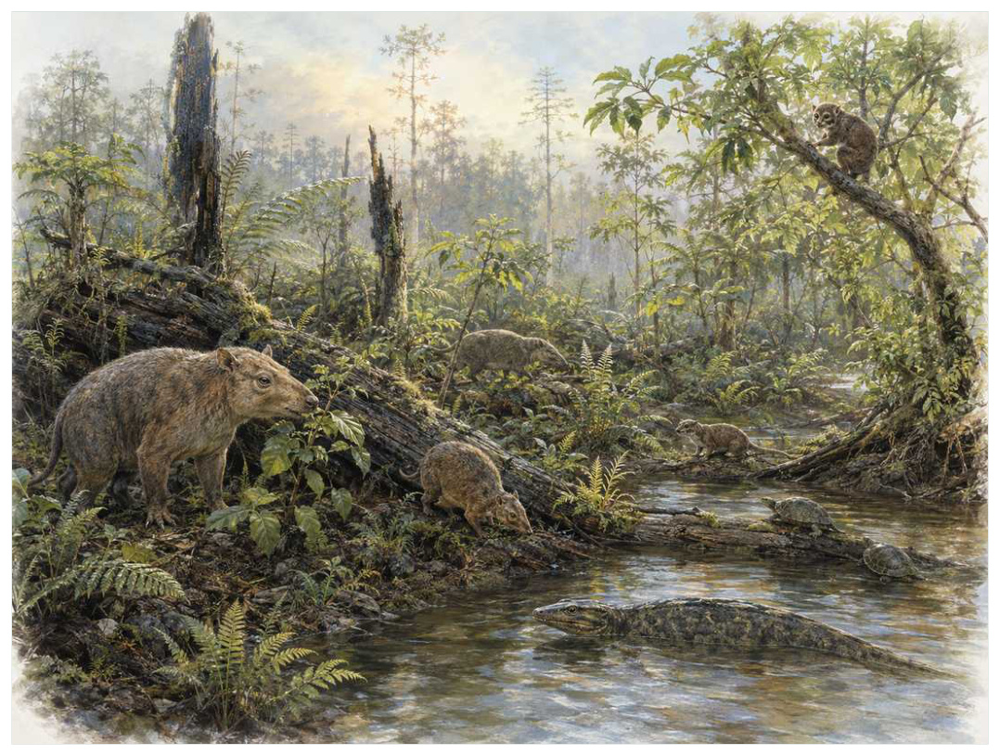

第15篇 · 古新世与始新世：哺乳动物的实验时代 · 第 52 章
古新世：哺乳动物第一次大规模生态试验
本篇主题:古新世与始新世：哺乳动物的实验时代
温暖世界中，哺乳动物快速尝试今天已消失的大量身体方案。

本章科学复原配图 （用于呈现结构与生态关系, 不替代化石照片、测量数据与系统发育证据。）
这一章进入约6600万至5600万年前。没有任何生物预知下一时代，所有性状都只能在当时的资源、天敌和繁殖条件下接受筛选。古新世的哺乳动物世界既熟悉又陌生。胎盘类和有袋类近亲开始扩大体型，但很多大型植食与肉食角色由踝节目、全齿目、裂齿目等后来消失的支系承担。身体方案仍在试验：有的头骨巨大、四肢粗壮，有的牙齿适合压碎，有的看似食肉却亲缘远离现代食肉目。现代科级群落尚未成形，生态角色也未被今天熟悉的动物垄断。
进入这个时代
生态系统的真实声音不是巨兽咆哮，而是持续的摄食、分解、搬运和繁殖。每一具尸体、每一层落叶和每一次沉积扰动都会重新分配资源。森林覆盖高纬度，气候总体温暖。小型树栖哺乳动物在枝间取食果实，粗壮的古兽类在地面啃食，长吻掠食者追逐猎物。没有草原奔跑群，也没有现代猫狗；每个空缺角色都可能被多个支系尝试。
在“古新世：哺乳动物第一次大规模生态试验”所覆盖的时间里，不能把地理与气候当作固定背景。海陆位置、海平面、河流或植被结构会改变资源可达性，同一性状在不同地区可能得到完全相反的选择结果。
以古新世：哺乳动物第一次大规模生态试验为例，身体结构总有材料和发育成本。硬壳提高防护却使生长和运动更昂贵，长颈扩大取食范围却增加支撑与供血问题，高代谢提高持续活动也提高食物需求。所谓成功设计从来是特定环境中的权衡。 在本章中，这一约束具体落在“森林扩张提供果实、叶片和树栖空间”这条关系上。
再从约6600万至5600万年前的时间尺度看，化石记录偏爱硬组织、快速埋藏和容易出露的岩层。一次“首次出现”通常只是目前所知的最早记录，一次“突然消失”也需要排除保存窗口关闭。年代、形态和环境证据必须一起解释。 它与“胎盘类体型快速扩大”共同决定了后续变化可以沿哪些路径发生。
生态系统如何运转
理解“森林扩张提供果实、叶片和树栖空间”需要区分个体事件与长期压力。偶然一次捕食只改变个体命运，持续数千代的稳定关系才可能推动牙齿、外壳、感觉器官或生活史发生方向性变化。
围绕“森林扩张提供果实、叶片和树栖空间”，这种关系没有永恒赢家。收益随密度和环境改变：防御越常见，攻击专门化的价值越高；资源越稀少，维持昂贵结构的代价越大。化石记录中的扩张与衰退，常是这种动态平衡被外部事件打破的结果。对古新世：哺乳动物第一次大规模生态试验而言，这一后果还会与“大体型在捕食压力较低和资源充足时快速演化”相互放大或抵消。
“大体型在捕食压力较低和资源充足时快速演化”还会改变可利用空间。一个支系若能进入新的水深、植被高度或沉积层，竞争会暂时减弱；随后追随者、捕食者和寄生者又会把新空间变成新的互动网络。
围绕“大体型在捕食压力较低和资源充足时快速演化”，它的长期后果通常通过幼体和繁殖体现。成年个体即使能抵抗一次危机，只要巢址、配子、幼体食物或成长季节被破坏，种群仍会在数代内下降。 对古新世：哺乳动物第一次大规模生态试验而言，这一后果还会与“牙齿和踝关节的不同组合让多个支系独立尝试植食与捕食”相互放大或抵消。
把“牙齿和踝关节的不同组合让多个支系独立尝试植食与捕食”放进食物网，可以看到它不是孤立行为。它会影响种群密度、栖息地使用和尸体进入分解链的速度，并把后果传给并未直接参与互动的物种。
围绕“牙齿和踝关节的不同组合让多个支系独立尝试植食与捕食”，还要考虑空间异质性。一项在浅海、河谷或林冠有效的策略，移到深水、干旱内陆或开阔地便可能失去优势。因此同一支系常出现区域性扩张，而不是全球同步取代。 对古新世：哺乳动物第一次大规模生态试验而言，这一后果还会与“森林扩张提供果实、叶片和树栖空间”相互放大或抵消。
关键演化创新
在“古新世：哺乳动物第一次大规模生态试验”中，围绕“胎盘类体型快速扩大”，这一结构的历史应按性状拆开。支撑、感觉、供能和控制往往不是同时成熟，化石会显示镶嵌状态：某一部分已接近后来的形态，其他部分仍保留祖征。 它首先需要在约6600万至5600万年前的生态条件下产生可测量收益。
就“胎盘类体型快速扩大”而言，化石能较可靠地记录硬组织形态，却很少直接保留基因调控与短时行为。因此结构出现通常可信，最初用途和选择路径则应按证据标为主流解释或合理推测。 本章把它与“树栖与果食生态”并列，是为了显示复杂性状往往依赖多部分协同。
在“古新世：哺乳动物第一次大规模生态试验”中，围绕“树栖与果食生态”，“树栖与果食生态”是本章的重要演化创新。创新并不等于某一代突然长出完整器官，它通常由旧结构的尺寸、连接、材料和表达时序逐步变化，并在每个中间阶段承担可用功能。 它首先需要在约6600万至5600万年前的生态条件下产生可测量收益。
就“树栖与果食生态”而言，其宏观影响往往滞后于结构起源。一个创新可以先在小型、稀少支系中存在数百万年，直到环境变化或竞争者灭绝后才迅速扩张；“出现”和“成为主导”是两个不同事件。 本章把它与“灭绝支系占据现代类比生态位”并列，是为了显示复杂性状往往依赖多部分协同。
在“古新世：哺乳动物第一次大规模生态试验”中，围绕“灭绝支系占据现代类比生态位”，这一结构的历史应按性状拆开。支撑、感觉、供能和控制往往不是同时成熟，化石会显示镶嵌状态：某一部分已接近后来的形态，其他部分仍保留祖征。 它首先需要在约6600万至5600万年前的生态条件下产生可测量收益。
就“灭绝支系占据现代类比生态位”而言，这也提醒我们不要寻找单一关键基因。复杂性状由多个组织和调控网络协调，改变任何一环都可能产生不同结果，演化路径因此呈树状而非直线。 本章把它与“胎盘类体型快速扩大”并列，是为了显示复杂性状往往依赖多部分协同。
生命群像：把物种放回生态网络
冠齿兽（Coryphodon）
认识冠齿兽（Coryphodon）要先放弃静态骨架印象。它生活在晚古新世至始新世，约约500千克级，日常任务是作为半水边或森林大型植食者维持能量与繁殖。粗壮身体、短肢和低冠齿适合柔软植物只是这一整套生活史中最容易化石化的部分。
对冠齿兽而言，这种生活方式还会反向塑造环境。摄食改变植物或猎物结构，足迹和掘穴改变沉积，尸体和排泄物把营养集中到局部。生态位不是它进入的固定房间，而是它与其他生物共同建造并持续修改的关系网络。 这使“粗壮身体、短肢和低冠齿适合柔软植物”不能脱离其半水边或森林大型植食者角色来理解。
我们之所以能够作出上述判断，主要因为骨骼与牙齿支持食性，同位素显示部分种与水域关系密切但非河马式专化。单一结构通常有多种功能解释，所以还要查看磨损、病理、肌肉附着、沉积环境和近缘比较。计算模型能排除不可能姿势，却不能自动恢复没有保存的软组织。
由冠齿兽这个案例看，面对仍有争议的细节，负责任的复原不是停止讲述，而是标注证据等级。形态、年代和亲缘可较确定，具体姿势、叫声、求偶和群猎则按材料降级；新标本会在这些边界内继续改写认识。它在晚古新世至始新世留下的记录，因此同时是第52章所讨论的形态史和生态史的一部分。
钝脚兽（Pantolambda bathmodon）
钝脚兽（Pantolambda bathmodon）生活在古新世，已知体型约为约40至50千克。它在群落中的角色可概括为中型森林植食或杂食者。最值得观察的结构是五趾足和较通用牙齿代表大型化早期阶段。这些结构不是为了后来时代而准备，而是在当时直接影响摄食、运动、防御或繁殖。
对钝脚兽而言，相似环境可能让远亲出现相近轮廓，但内部结构会保留祖先限制。比较它与现代类比时，应只借用可检验的功能，不把现代动物的行为、社会制度或代谢水平整套复制到古生物身上。这使“五趾足和较通用牙齿代表大型化早期阶段”不能脱离其中型森林植食或杂食者角色来理解。
其复原依赖牙齿生长线提示妊娠和成长节奏，亲缘并非现代有蹄类直接祖先。年代和保存形态通常属于较强证据，体重、速度、颜色和社会行为则需要额外假设。书中把这些层次拆开，是为了让读者知道哪些可视为事实，哪些仍应等待更多材料。
由钝脚兽这个案例看，它不是祖先链条上必须跨过的一格。演化树中同时存在许多近缘支系，只有少数留下后代；旁支化石同样关键，因为它们显示某组性状出现的顺序和可行范围。 它在古新世留下的记录，因此同时是第52章所讨论的形态史和生态史的一部分。
中兽（Mesonyx）
在这一章的生命群像里，中兽（Mesonyx）不能只当作图鉴名称。它出现于始新世，体型大约狼大小，主要生活方式是陆地肉食或食腐有蹄形哺乳动物；蹄状趾端与大型剪切牙形成陌生组合则说明身体怎样围绕这一生活方式进行组合。
对中兽而言，它既可能是捕食者、植食者或工程者，也同时是其他生物的猎物、竞争者和分解资源。一次取食只是一瞬，长期生态影响来自成千上万个体反复搬运营养、改变植被或扰动沉积物。体型越大，这种工程效应通常越明显，但恢复速度也常越慢。 这使“蹄状趾端与大型剪切牙形成陌生组合”不能脱离其陆地肉食或食腐有蹄形哺乳动物角色来理解。
科学家并未直接看见它生活，依据是过去常被视为鲸祖先，分子和踝骨证据现更支持鲸嵌入偶蹄类。现代类比可以帮助提出可检验模型，却不能取代化石；越具体的短时行为，越需要痕迹、内容物或重复病理等直接线索。
由中兽这个案例看，这个案例还提醒我们，亲缘和生态角色是两件事。近亲可以因资源分化而外形迥异，远亲也能因相似压力而趋同。把它放在演化树和食物网两个坐标中，才不会误写成线性进步。 它在始新世留下的记录，因此同时是第52章所讨论的形态史和生态史的一部分。
泰坦巨兽（Titanoides）
从外形看，泰坦巨兽（Titanoides）最容易被记住的是巨大犬齿样结构和重体型使其外观不像现代植食者。它生活在晚古新世，大小约熊大小，承担大型植食或杂食哺乳动物这一生态功能。把年代、体型和功能放在一起，才能避免把奇特形态当成无意义装饰。
对泰坦巨兽而言，成年体型往往主导复原，但幼体可能使用完全不同的食物和栖息地。若成长阶段跨越多个生态位，种群就同时依赖多套环境；其中任一环节中断都可能导致长期衰退。化石骨床的年龄结构因此比单具最大标本更能说明生态。 这使“巨大犬齿样结构和重体型使其外观不像现代植食者”不能脱离其大型植食或杂食哺乳动物角色来理解。
证据核心是牙齿磨损支持植物为主，防御和种内竞争功能可能并存。化石记录更擅长回答“结构是什么”，较难回答“每天怎样行动”。足迹、胃内容物、咬痕或胚胎若存在，会显著缩小推测范围；若只有零散骨骼，行为叙述就必须更克制。
由泰坦巨兽这个案例看，它所代表的身体方案后来可能消失，也可能被远亲以不同材料重新发明。生命史因此既有可重复的功能解，也有不可复制的谱系路径。两者结合，才解释现代生物为何既熟悉又偶然。 它在晚古新世留下的记录，因此同时是第52章所讨论的形态史和生态史的一部分。
普托勒迈兽类先驱（Arctostylopida）
普托勒迈兽类先驱（Arctostylopida）是古新世至始新世的一名真实生态成员，而不是通往后代的抽象过渡。它约有小型至中型，以亚洲与北美植食或杂食者的方式获取资源；特殊牙列长期让其亲缘位置难定反映了其祖先历史与局部选择压力共同留下的结果。
对普托勒迈兽类先驱而言，这种生活方式还会反向塑造环境。摄食改变植物或猎物结构，足迹和掘穴改变沉积，尸体和排泄物把营养集中到局部。生态位不是它进入的固定房间，而是它与其他生物共同建造并持续修改的关系网络。 这使“特殊牙列长期让其亲缘位置难定”不能脱离其亚洲与北美植食或杂食者角色来理解。
判断它的生活方式时，研究者首先使用多套系统分析给出不同归属，是新生代早期‘牙齿类群’分类困难的代表。随后会检验替代解释：同样的牙是否也能处理其他食物，同样的骨骼比例是否由年龄造成，同一骨层是否来自群体生活还是灾难性聚集。排除过程比贴标签更重要。
由普托勒迈兽类先驱这个案例看，过去的复原常受完整现代动物模板影响，新材料则迫使研究者接受更陌生的身体比例或生活方式。最稳妥的表达是保留估计区间，并明确哪些软组织、颜色和社会行为仍属合理推测。 它在古新世至始新世留下的记录，因此同时是第52章所讨论的形态史和生态史的一部分。
因果链：环境、生态与性状
从时间顺序看，“胎盘类体型快速扩大”的最早记录不等于它立即改写生态系统。结构可能先以小幅变异出现在稀少支系中，经历很长的试验期，直到“森林扩张提供果实、叶片和树栖空间”所代表的资源条件或竞争格局改变，才出现可见的辐射。反过来，一个支系在化石记录中突然繁盛，也不证明关键结构刚刚产生；保存窗口打开、地理扩散或生态位释放都能造成类似图景。因此讨论约6600万至5600万年前的创新时，本章把“首次出现”“功能完善”“多样化”和“成为生态主导”分成四个问题，避免用一个日期替代整段历史。
在约6600万至5600万年前，身体不是若干部件的简单相加。“胎盘类体型快速扩大”只有与“灭绝支系占据现代类比生态位”在供能、控制和发育上兼容，才可能稳定遗传；局部性能提高若超过呼吸、循环或支撑能力，整体反而失效。中兽的蹄状趾端与大型剪切牙形成陌生组合因此应放进完整身体比例中解释，而不是把某一器官单独夸大。生物力学模型可以估算受力和运动范围，组织学能限制生长速度，近缘比较能提示同源关系；三者相互校验，才有可能从静态化石走向一个能够活着完成日常活动的动物或植物。
种群层面的成功还要考虑波动，而不仅是平均状态。在资源丰富年份，“树栖与果食生态”带来的高性能可能迅速增加个体数；在低谷年份，维持该结构的成本又会放大死亡。若钝脚兽拥有较广食谱或可迁移，便可能跨过低谷；若其五趾足和较通用牙齿代表大型化早期阶段高度依赖单一环境，恢复就更困难。化石群落中的丰度峰值、体型变化和地理收缩能为这种“繁荣—压力—恢复”循环提供线索，但必须与采样偏差区分。对约6600万至5600万年前的任何稳态描述，都只是长期波动中被岩层保存的一小段。
本章的因果链最终落在繁殖上。“大体型在捕食压力较低和资源充足时快速演化”改变个体获得资源和避开风险的方式，“胎盘类体型快速扩大”改变身体能做什么，但只有这些差异持续影响配子、胚胎、幼体和成体留下后代的概率，演化频率才会跨世代变化。冠齿兽和钝脚兽的化石常让人关注尺寸或武器，然而巢、蛋、芽孢、孢粉、幼体壳和成长线往往更接近选择真正发生的位置。理解古新世：哺乳动物第一次大规模生态试验，因此要把最壮观的成年结构重新接回完整生活史。
把“胎盘类体型快速扩大”拆成成本与收益，可以避免把演化创新写成无条件升级。它可能扩大摄食、运动或繁殖的边界，却要付出组织材料、发育协调和日常维持的代价；“树栖与果食生态”又会改变这笔账在不同生命阶段的分配。对冠齿兽而言，粗壮身体、短肢和低冠齿适合柔软植物在成年阶段或许十分醒目，但种群能否延续仍取决于幼体是否能找到食物、是否有安全的生长场所以及环境波动后是否保留繁殖者。化石往往偏爱成年硬组织，因此书写约6600万至5600万年前时必须主动补上这些不易保存却决定长期命运的环节。
时代横截面：个体、种群与证据
证据强度也应逐句区分。牙齿化石高密度记录食性与年代若直接记录形态或行为痕迹，可把某些可能性排除；踝骨和四肢判断运动方式若来自模型或现代类比，则通常提供范围而非唯一答案。对中兽的蹄状趾端与大型剪切牙形成陌生组合，我们也许能高可信地描述结构，却只能以主流解释讨论功能，以合理推测讨论日常行为。把层级写出来不会削弱故事，反而让读者知道未来新发现最可能改动哪一部分。
把结构看作模块，可以解释为什么过渡类型常显得“新旧并存”。冠齿兽的粗壮身体、短肢和低冠齿适合柔软植物可能已经接近后来状态，而呼吸、繁殖或运动的其他部分仍保留祖征；钝脚兽可能采用另一种组合达到相似功能。演化不要求所有部件同步改变，只要求每个阶段的完整个体能够生活和繁殖。正因如此，真实谱系会产生旁支、回退和多次独立试验，而不是教科书式直梯。
再把中兽加入横截面，群落关系会从两者比较变成网络。它作为陆地肉食或食腐有蹄形哺乳动物，通过蹄状趾端与大型剪切牙形成陌生组合连接资源与其他消费者；其数量变化可能同时影响冠齿兽和钝脚兽，甚至改变分解链和营养循环。这样的间接效应很少能由一具骨架直接证明，却可以从物种共现、丰度、痕迹化石和环境指标中受到约束。古新世：哺乳动物第一次大规模生态试验的生态复原因此需要群落数据，而不只是著名标本的精细解剖。
地理同样会拆散看似整齐的时代标签。约6600万至5600万年前并不是全球同时拥有同一种气候与群落：海盆深浅、纬度、山脉、河流和大陆隔离会让冠齿兽、钝脚兽与中兽的分布错开。一个支系可能在某地区衰退、在另一地区成为避难所；后来扩散又会造成化石记录中的“重新出现”。因此本章的代表物种用于说明机制，而不意味着它们都在同一地点同一时刻相遇。
“谁取代了谁”常把复杂过程压成单线叙事。在古新世：哺乳动物第一次大规模生态试验中，即使钝脚兽在某层位后减少、中兽随后增加，也可能是二者分别响应气候或栖息地，而不是直接竞争导致淘汰。需要检查时间误差、地理重叠和资源相似度；只有三者都支持，替代关系才更可信。更多时候，生态系统通过功能重新组合过渡，旧支系与新支系会长期并存。
科学家为什么这样判断
“牙齿化石高密度记录食性与年代”还需要与年代学绑定。只有事件先后关系可靠，才能讨论因果；若环境变化和生物响应的误差范围大量重叠，就应表述为相关或可能机制，而不是宣布已经证明。
“踝骨和四肢判断运动方式”最有价值的地方，是它能排除某些流行复原。关节不允许的姿势、承重无法支持的速度、与沉积环境冲突的生活方式，都可以被证据淘汰；剩余模型仍可能不止一个。
“分子系统与古蛋白修正仅凭外形的分类”提供的是一类约束而非完整录像。它可能精确记录某一瞬间，却未必代表全年或整个物种；也可能反映长期平均，却无法指出单次行为。把不同时间尺度的证据组合，才能重建生态过程。
在“古新世：哺乳动物第一次大规模生态试验”这一问题上，把上述方法合在一起，研究者才能从残缺材料走向受约束的复原。任何一条证据都可能受到成岩、污染、样本量或现代类比的限制；结论越具体，越需要多条独立证据指向同一方向，并与约6600万至5600万年前的地层背景相容。
过去的图景与今天的证据
早期新生代许多‘目’的关系长期依牙齿命名，近年系统发育和古蛋白证据不断重排。所谓‘古食肉兽’并不都属于现代食肉目，‘踝节目’也被发现是把多个不同支系混在一起的方便集合。分类不稳定反映材料增加，而不是生态叙事失效。
围绕“古新世：哺乳动物第一次大规模生态试验”，旧复原并不总是彻底错误。它可能正确抓住亲缘或基本功能，却在姿势、比例和生态上被新标本修订。比较“过去认为”和“现在更支持”，能看见证据如何逐层替换想象。
对约6600万至5600万年前的材料而言，这里的争论并非一方相信科学、另一方拒绝科学，而是不同材料对模型的约束力度不同。旧结论可能建立在少量标本或错误现代类比上，新技术增加性状后会改变最合理解释。修正是研究正常运行的结果。
跨尺度观察
灭绝选择性：危机不会随机删除名单。分布狭窄、食性单一、体型大、成熟慢或依赖特定栖息地的支系往往风险更高，但每次事件的杀伤机制不同，规律只能作为概率而非绝对法则。 在“古新世：哺乳动物第一次大规模生态试验”中，这一尺度具体连接了“森林扩张提供果实、叶片和树栖空间”与“胎盘类体型快速扩大”，因而不能只从单个成年标本判断。
恢复不是复原：大灭绝后的多样性回升并不意味着旧生态返回。幸存者会以新组合接管功能，某些空缺可能数百万年无人填补，另一些由远亲迅速占据。恢复速度应分别看物种数、身体大小和食物网复杂度。 在“古新世：哺乳动物第一次大规模生态试验”中，这一尺度具体连接了“大体型在捕食压力较低和资源充足时快速演化”与“树栖与果食生态”，因而不能只从单个成年标本判断。
空间镶嵌：同一地质时期包含多个大陆、纬度和海盆。地区之间可因山脉、海峡和洋流形成不同群落，局部化石库不能代表全球平均。比较多个地点能区分真正的全球事件与区域替换。 在“古新世：哺乳动物第一次大规模生态试验”中，这一尺度具体连接了“牙齿和踝关节的不同组合让多个支系独立尝试植食与捕食”与“灭绝支系占据现代类比生态位”，因而不能只从单个成年标本判断。
通向下一个时代
从本章走向下一阶段时，需要保留的不是一串物种名，而是一个因果链：环境改变可用能量与栖息地，生态关系筛选性状，性状又反过来改造环境。古新世末的快速增温事件将重塑森林和哺乳动物体型，并伴随真正偶蹄类、奇蹄类与灵长类近亲的扩张。鲸类的陆生祖先也出现在这一背景中。
本章精选来源
- [R87] Rose, K. D. The Beginning of the Age of Mammals. Johns Hopkins University Press, 2006.
- [R88] Gingerich, P. D. et al. Origin of whales from early artiodactyls: hands and feet of Eocene Protocetidae. Science 293, 2239-2242 (2001).
- [R89] Thewissen, J. G. M. et al. Whales originated from aquatic artiodactyls in the Eocene epoch of India. Nature 450, 1190-1194 (2007).
- [R90] Uhen, M. D. The origin(s) of whales. Annual Review of Earth and Planetary Sciences 38, 189-219 (2010).
- [R91] Marx, F. G., Lambert, O. & Uhen, M. D. Cetacean Paleobiology. Wiley Blackwell, 2016.